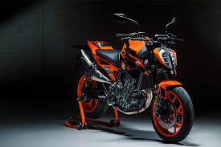

Motocicleta Enduro
Titulo
Las motos enduro son motos obligatoriamente de una cilindrada mayor a 125 2 tiempos o 250 4 tiemposs

Motocicleta Racing
RACING
Las motos racing, también llamadas “pisteras” son motocicletas de estilo deportivo y generalmente de medio o alto cilindraje, hechas para la velocidad y la máxima eficiencia en las distancias medias y largas

Motocicleta Naked
Naked
Generalmente las motos naked se construyen con un tanque más grande y más largo. Además, este tipo de motocicletas también tienen controles de pie más traseros para evitar que las estriberas raspen el pavimiento, especialmente durante las curvas.

Motocicleta Touring
Touring
Son motos diseñadas para viajes largos a una velocidad normal o elevada, en las cuales se puede viajar cómodamente, pudiendo realizar un tipo de conducción similar a la sport.